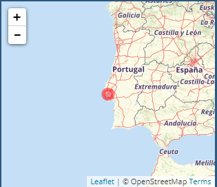
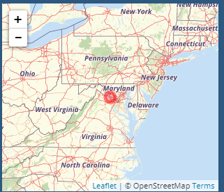
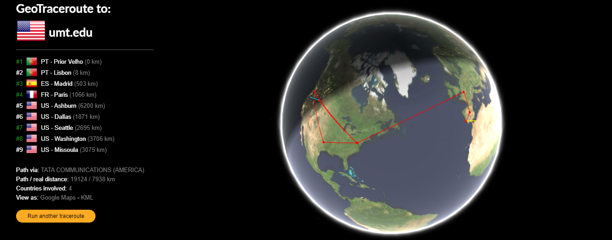
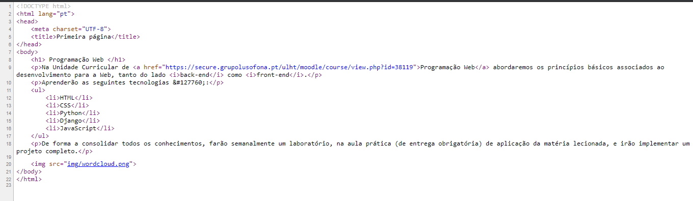
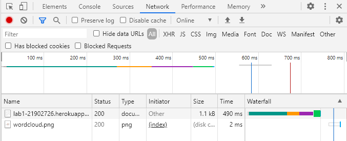
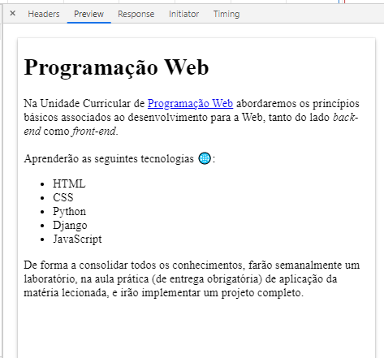
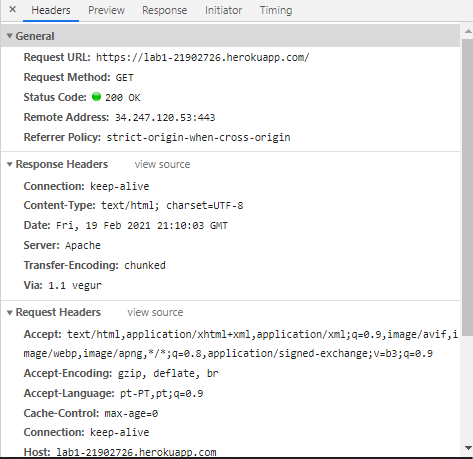
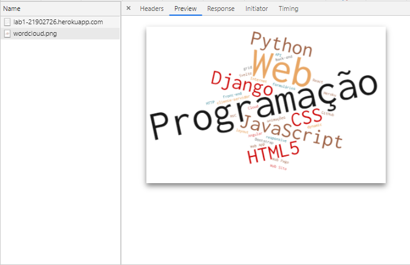
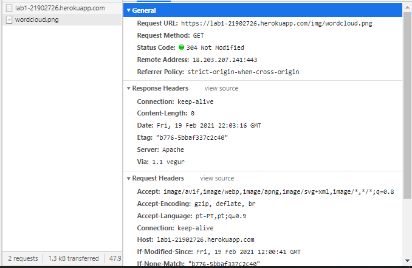
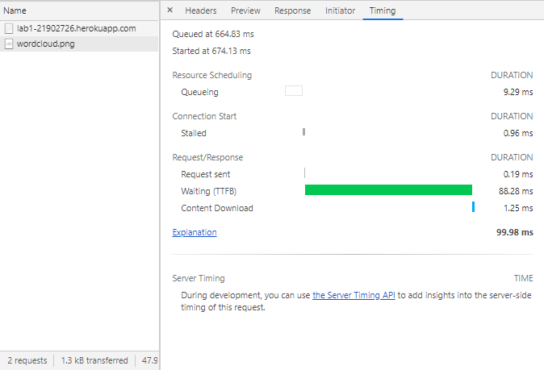

Programação web
Report Lab1
Neste report será apresentada uma compilação de imagens obtidas durante a realização do laboratório 1.
Ferramentas Utilizadas
Imagens recolhidas durante o decorrer do Lab1
-
IP do computador onde foi criada a app.

-
Endereço IP do servidor heroku onde se encontra a app.

-
Geotraceroute rastreia a rota que os pacotes IP fazem até chegarem ao servidor heroku, a distânçia entre cada ponto e os países onde passaram.

-
Códico disponível utilizando o shortcut ctrl+u na página web Primeira Página.

- Barra network da 'primeira página'.
Nesta barra é possivel observar o registo de solicitações feitas enquanto o DevTools estava aberto, nome, o tipo, a velocidade do pedido e a quantidade de documentos registados.

Barra de Pedidos
Na barra de pedidos do site Primeira Página é apresentado dois tipos de ficheiro um documento e um png ao clickarmos individualmente em cada um obtemos informações sobre os mesmos.
- O headers apresenta-nos os pedidos feitos ao servidor e o seu estado.
- O preview apresenta-nos cada ficheiro individualmente.
- O Timing apresenta-nos o tempo de transferência dos ficheiros.
- Documento
-
Preview do documento

-
Headers do documento

Timing do documento
- Png
-
Preview do png.

-
Headers do png.

-
Timing do png.
